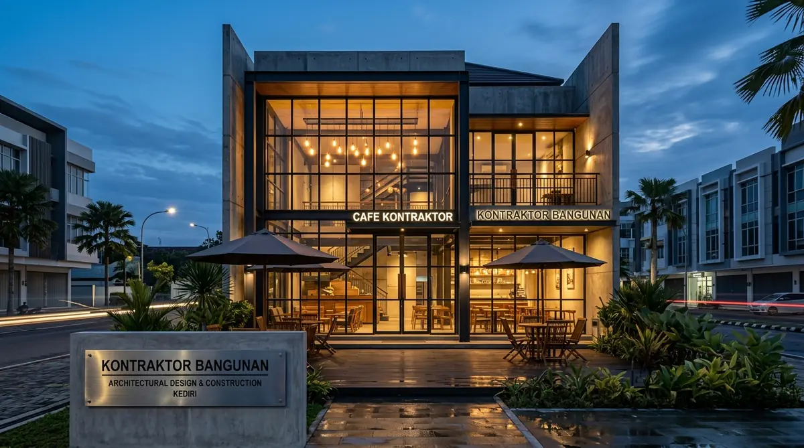

Mengapa Desain Arsitek Sangat Menentukan Kesuksesan Ruko & Kafe di Kediri?
Desain komersial yang tepat mampu melipatgandakan traffic pengunjung harian, memperpanjang waktu singgah pelanggan (dwell time), dan memperkuat citra merek usaha Anda.
Menurut riset perilaku konsumen ritel Jawa Timur 2025/2026, lebih dari 65% keputusan konsumen memilih kafe atau restoran baru di area perkotaan dipengaruhi oleh daya tarik visual fasad eksterior dan estetika interior yang ramah media sosial (instagramable).
Arsitek komersial Kontraktor Bangunan memberikan sentuhan nilai tambah:
- Fokus pada Return on Investment (ROI): Setiap meter persegi ruang diperhitungkan untuk menghasilkan keuntungan maksimal tanpa mengorbankan kenyamanan pelanggan.
- Efisiensi Energi Operasional: Penataan bukaan jendela dan atap skylight menurunkan beban biaya tagihan listrik harian tempat usaha.
- Fleksibilitas Ruang Usaha: Struktur dirancang dengan konsep open-space bentang lebar agar tata ruang mudah dimodifikasi saat bisnis berkembang.
Bagaimana Tahapan Merancang Bangunan Komersial yang Menarik dan Efisien?
Tahapan mencakup studi positioning brand, zonasi ruang publik-servis, desain fasad 3D tematik, detail MEP khusus usaha, hingga pendampingan tender.
Berikut alur kerja perancangan bangunan komersial bersama tim arsitek kami:
1. Riset Karakter Brand & Target Konsumen
Menganalisis jenis usaha yang akan dijalankan (coffee shop, klinik kecantikan, restoran cepat saji, distro fashion) untuk menentukan konsep arsitektur yang paling tepat.
2. Zoning Tata Letak & Sirkulasi
Mengatur pembagian zona: area display/meja makan, kasir, dapur servis/barista, toilet bersih, gudang stok, dan akses loading logistik agar tidak saling bersinggungan.
3. Pemodelan 3D Fasad & Suasana Pencahayaan (Lighting Design)
Menyusun render 3D suasana siang dan malam hari dengan simulasi pencahayaan lampu warm white spotlight dan neon signage yang memikat pandangan dari tepi jalan raya.
4. Detail Engineering Design (DED) & Spesifikasi Khusus
Menyusun gambar kerja instalasi pipa pembuangan limbah air kotor, jalur exhaust fan dapur, instalasi stopkontak meja pengunjung, dan spesifikasi material lantai heavy duty.

Konsep tata ruang interior kafe dan ruko dengan pencahayaan komersial modern yang memikat pelanggan.
Tabel Komparasi Konsep Arsitektur Komersial Populer di Kediri
Tabel komparasi menguraikan perbandingan karakteristik gaya desain komersial, estimasi biaya konstruksi, dan segmen pasar yang dibidik di Kediri.
| Gaya Arsitektur | Ciri Khas Material & Fasad | Estimasi Biaya Bangun / m² | Kesesuaian Usaha | Daya Tarik Konsumen |
|---|---|---|---|---|
| Modern Industrial | Dinding unfinish, baja WF ekspos, kisi expanded metal | Rp3.200.000 – Rp4.000.000 | Kafe Kopi, Coworking, Barbershop | Sangat Tinggi (Gen Z & Millennial) |
| Modern Minimalist ACP | Panel ACP warna solid, tirai kaca tempered, signage LED | Rp3.800.000 – Rp4.800.000 | Kantor, Klinik, Toko Retail, Apotek | Tinggi (Kesan Bersih & Profesional) |
| Tropical Contemporary | Ornamen kayu/conwood, taman vertikal, roster terakota | Rp4.000.000 – Rp5.500.000 | Resto Keluarga, Villa Resort, Boutique | Sangat Tinggi (Keluarga & Komunitas) |
| Neo-Classical Luxury | Profil molding gypsum, pilar ornamen, marmer fasad | Rp5.000.000 – Rp7.500.000 | Butik Emas, Bridal Studio, Klinik VVIP | Eksklusif (Segmen Menengah Atas) |
- Alokasikan Minimal 20% Lahan untuk Parkir: Ketiadaan area parkir motor dan mobil yang aman menjadi alasan nomor satu pelanggan membatalkan kunjungan ke ruko atau kafe Anda.
- Wajibkan Sistem Grease Trap Dapur: Untuk usaha makanan dan minuman, pasang bak perangkap lemak sebelum air buangan masuk ke saluran kota guna mencegah pipa mampet dan memenuhi izin dinas lingkungan hidup.
- Rancang Spot Foto Ikonik (Photo Point): Sediakan satu sudut dinding dengan mural, logo brand bernyala indah, atau pencahayaan estetik yang mendorong pengunjung mengunggah foto ke media sosial.
Pertanyaan yang Sering Diajukan (FAQ)
Kesimpulan Praktis
Tempat usaha komersial yang sukses dibangun di atas fondasi desain arsitektur yang kuat, memikat pelanggan, dan fungsional secara operasional. Kembangkan bisnis Anda di Kediri bersama biro arsitek komersial profesional.